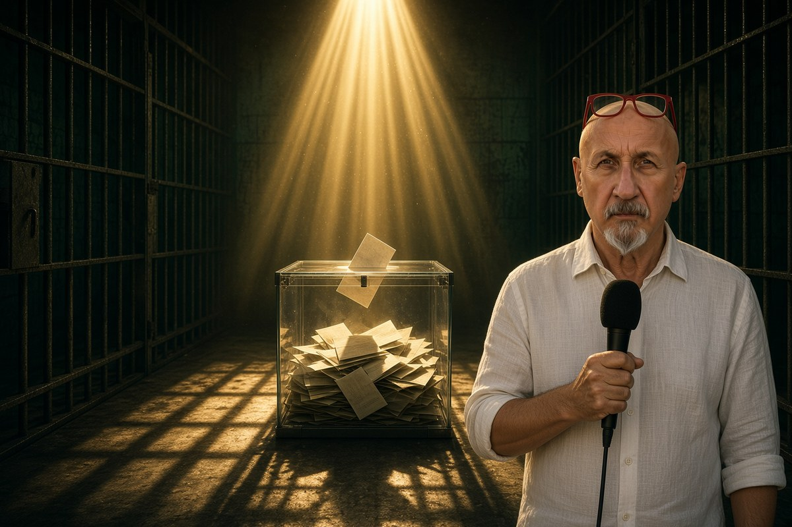

Geopolitica · 28 ottobre 2026
Brasile, il giudice, il banchiere e la famiglia Bolsonaro

Lo stesso giudice della Corte suprema ha processato il padre, fatto arrestare un figlio e tolto il passaporto all'altro, appena sconfitto da Lula. E un banchiere sotto inchiesta, secondo il New York Times, scriveva proprio a lui.
di Franco Zanghì
Domenica 25 ottobre Flávio Bolsonaro ha perso il ballottaggio contro Luiz Inácio Lula da Silva: quasi il 52% contro poco più del 48%, oltre 4 milioni di voti di distanza. Lula è presidente per la quarta volta. Il lunedì, in strada a Brasilia, la polizia federale ha fermato Flávio e gli ha chiesto di consegnare i passaporti, su ordine del giudice della Corte suprema Alexandre de Moraes.
Al centro dell'inchiesta c'è l'avvocato Willer Tomaz, accusato di aver riciclato oltre un miliardo di dollari; gli investigatori vogliono chiarire i rapporti con Flávio, che avrebbe potuto muovere i conti di una società legata a quell'affare. Tutti e due negano qualunque legame di denaro. Flávio ha parlato di intimidazione e ha detto che non aveva mai pensato di lasciare il Brasile.
La fuga, passo per passo
Poche ore dopo, invece, se n'è andato. Secondo la Direzione nazionale delle migrazioni argentina, alle 22.50 del 27 ottobre Flávio è entrato a piedi in Argentina dal ponte internazionale Tancredo Neves, con la moglie e le figlie; alle 23.30 il gruppo si è imbarcato su un volo privato per Guayaquil, in Ecuador. Poi è riapparso in Florida. Un funzionario americano ha detto alla Cnn che il Dipartimento di Stato rilascerà i visti che consentono l'ingresso negli Stati Uniti.
In Texas, dal 2025, vive il fratello Eduardo, contro cui il Brasile ha emesso un mandato d'arresto: condanna definitiva a 4 anni e 2 mesi per aver cercato di convincere Washington a usare dazi e sanzioni contro il Brasile e fermare il processo al padre. Jair Bolsonaro, l'ex presidente, sta scontando 27 anni per il tentato colpo di Stato dopo la sconfitta del 2022, oggi ai domiciliari per motivi di salute.
Chi è il giudice, e perché il sorteggio fa discutere
Alexandre de Moraes non è un uomo di Lula. Alla Corte suprema lo ha nominato nel 2017 Michel Temer, che era stato vice di Dilma Rousseff e poi aveva rotto con il partito di Lula, prendendo il posto di lei dopo la destituzione; prima di entrare alla Corte, de Moraes era iscritto a un partito di centrodestra. Ha guidato il processo contro Jair Bolsonaro, ha firmato il mandato d'arresto per Eduardo e adesso indaga su Flávio.
L'inchiesta su Flávio è stata assegnata per sorteggio fra i 10 giudici della Corte che ricevono le inchieste: una possibilità su dieci. Ed è uscito proprio lui. Le sanzioni americane chieste da Eduardo, per altro, avevano colpito anche il giudice.
Il banchiere che sta da tutte e due le parti
Daniel Vorcaro era il proprietario del Banco Master. Secondo l'accusa, Flávio si è fatto dare da lui milioni di dollari per un film sulla vita del padre. Quando il banchiere è finito sotto inchiesta, secondo un dossier della polizia citato dal New York Times, mandava messaggi proprio a de Moraes per chiedere aiuto a non finire in carcere, e parlava di milioni pagati allo studio legale della moglie del giudice. Il giudice nega tutto.
Le contestazioni sul voto, e la memoria corta
Flávio non ha riconosciuto il risultato e ha detto: «Non ho perso io, ha vinto il sistema». Donald Trump ha parlato di elezione che sembra truccata, senza portare prove. La polemica riguarda le due ore in più concesse ai seggi: in quelle due ore sono stati registrati meno di 35.000 voti, e Lula ha vinto con oltre 4 milioni di voti di scarto.
In Brasile i ruoli si sono già scambiati. Nel 2018 in carcere c'era Lula: favorito alle elezioni, arrestato ad aprile nell'inchiesta Lava Jato, 580 giorni in cella, candidatura respinta. Il giudice che lo aveva condannato in primo grado, Sérgio Moro, divenne poi ministro della Giustizia di Jair Bolsonaro, e oggi sta con Flávio. Nel 2021 la Corte suprema ha annullato quelle condanne, giudicando quel giudice non imparziale.
Le accuse ai Bolsonaro sono gravi, e il padre è stato condannato in un processo, con quattro giudici contro uno. Ma un paese in cui a ogni elezione chi perde scappa o finisce in cella, e in cui lo stesso giudice ha in mano tutte le inchieste sulla famiglia sconfitta, ha un problema che va oltre i Bolsonaro e oltre Lula: la giustizia non deve soltanto essere giusta, deve anche sembrarlo.
Fonti
- Sky TG24, «Brasile, Lula rieletto presidente. Bolsonaro contesta esito», 26 ottobre 2026
- Time, «Flavio Bolsonaro Barred From Travel Amid Money Laundering Investigation», 27 ottobre 2026
- Il Fatto Quotidiano, «Fuga di Flavio Bolsonaro: dall'Argentina alla Florida», 28 ottobre 2026
- Ansa, «Brasile: Bolsonaro fugge in Florida», 27 ottobre 2026
- Euronews, «Flávio Bolsonaro in fuga dal Brasile: è in volo verso gli Stati Uniti», 27 ottobre 2026
- Il Post, «In Brasile è stato emesso un mandato di arresto contro Eduardo Bolsonaro», 9 ottobre 2026
- CNN Brasil, cronologia dell'inchiesta su Flávio Bolsonaro e sorteggio del relatore
- laRegione, Sda-Dpa, il film su Jair Bolsonaro e i pagamenti di Daniel Vorcaro, 5 ottobre 2026
- L'Espresso, risultati del primo turno ed elezione di Sérgio Moro in Paraná, 5 ottobre 2026
I messaggi di Daniel Vorcaro ad Alexandre de Moraes provengono da un dossier della polizia citato dal New York Times; il giudice nega. Il mandato d'arresto per Eduardo Bolsonaro non è eseguibile finché resta negli Stati Uniti. Alla data di pubblicazione non risultano reazioni della Corte suprema brasiliana alla partenza di Flávio Bolsonaro.